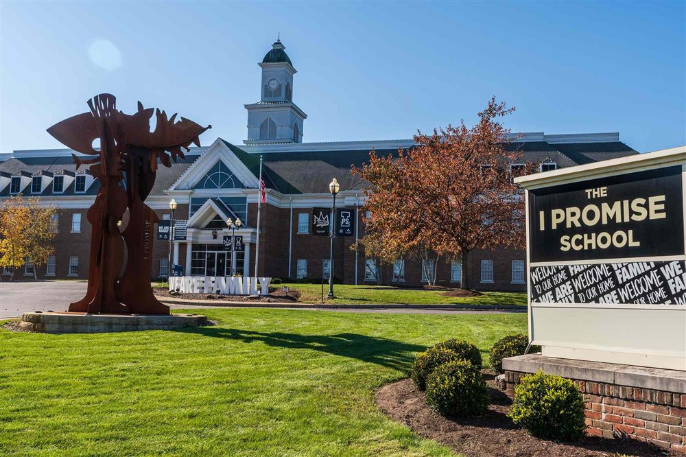

What he gives back
Most of his work outside basketball is in Akron, the city where he grew up. The foundation is the main way he does it.

Photo: MediaPunch / Shutterstock, 2021.
The work, in order
- 2004: the LeBron James Family Foundation starts. It begins with after-school programmes for children in Akron.
- 2018: the I PROMISE School opens with Akron Public Schools. Tuition, uniform, meals and a bike for every child. The school is for children who need the most help.
- 2020: I PROMISE Village opens. It gives housing to families who have no home, so the children can stay in school.
- 2020: he helps start More Than a Vote, with other athletes. The group helps people vote and finds poll workers.
- College: students from the school get four years of tuition and one year of room and board at the University of Akron.
A fair question
Some people say a sports star should only play and stay out of politics. Others say he should use his name to help. He answered this in 2018: he said he would not stop. Both sides of this argument are reasonable, and a page like this should say so.
This page only lists work that is reported by news organisations. It does not give money amounts, because those numbers change.
Back to the career page